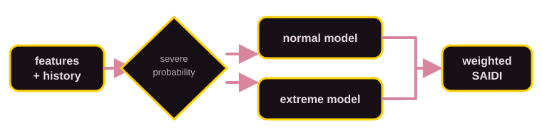
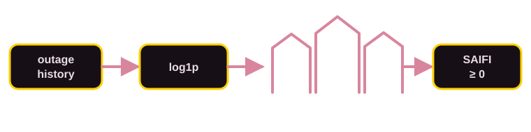
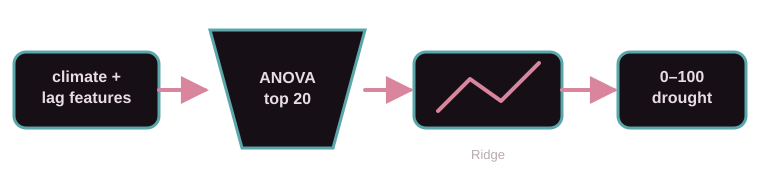
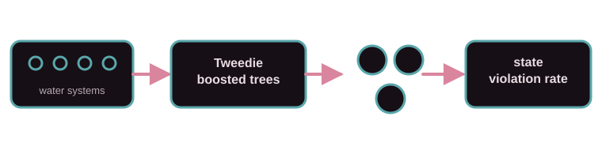

ELECTRICITY RELIABILITY × WATER SECURITY
Project state infrastructure stress with a frozen, chronologically evaluated ML system.
Explore baseline scenarios for outage duration, interruption frequency, drought severity and drinking-water compliance. The interface runs entirely from the supplied frozen project outputs.
SCENARIO OUTPUT
California · 2030
BASELINE06Y
ELECTRICITY STRESS
—Reliability pressure
—/ 100—
Approximate range—
SAIDI—min/customer
SAIFI—interruptions/customer
NATIONAL RANK—highest stress first
WATER STRESS
—Availability + compliance
—/ 100—
Approximate range—
DROUGHT—severity / 100
COMPLIANCE—rate / 100k
NATIONAL RANK—highest stress first
STATE SIGNAL TRACE
Observed history and recursive scenario
ElectricityWaterProjected
Electricity composition
Duration stress—
Frequency stress—
Water composition
Drought stress—
Compliance stress—
HOW EACH FINAL MODEL WORKS
Four frozen pipelines, one consistent visual grammar
SAIDI · Two-stage CatBoost

The first stage estimates whether the year behaves like a severe-event period. Separate normal and extreme CatBoost regressors are blended by that probability, allowing routine outages and disaster-driven events to follow different patterns.
SAIFI · Log-CatBoost

SAIFI is non-negative and strongly right-skewed. A log1p transformation reduces the influence of extremes, CatBoost learns nonlinear patterns, and the result is converted back to the interruption-frequency scale.
Drought · ANOVA + Ridge

ANOVA retains the twenty climate, seasonal and historical features most strongly related to drought. Ridge combines those signals while limiting overly large coefficients, producing a more stable 0–100 severity estimate.
Compliance · CatBoost Tweedie

Most public-water systems report zero health-based violations, while a smaller group reports larger values. Tweedie CatBoost models this non-negative, zero-heavy pattern; system predictions are combined into a state-level rate.
Frozen model registry
| TARGET | DEPLOYED MODEL | BACKTEST MAE | BACKTEST RMSE | R² |
|---|